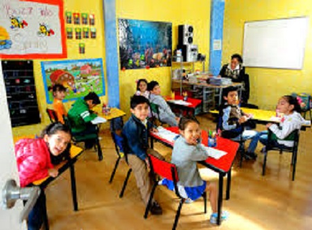
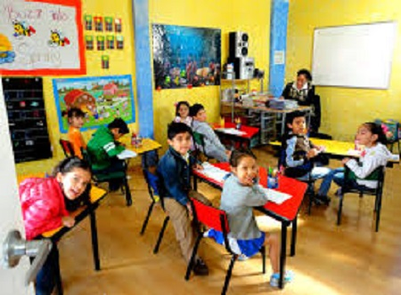
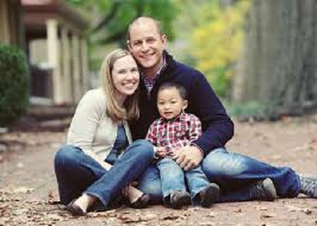
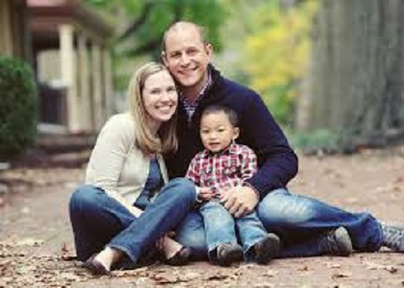

A María le cambió la vida totalmente
24 de Junio de 2016
María llegó de seis añitos a nuestra fundación con un cuadro crítico de desnutrición y en muy malas condiciones de salud. Desde el primer momento la acogimos en nuestro regazo, y le dimos todo lo necesario para su larga y compleja recuperación; todo esto, gracias a las ayudas que nuestros dondantes nos brindaron. Dos años despues, llegaron sus actuales padres: Efraín y María, provenientes de Cali y quienes quedaron encantados desde el primer momento con la mirada noble de esta niña. Ahora, María está en una familia que la ama, la cuida y le brinda todo lo necesario para que crezca felizmente. Este año, para a bachillerato y es la mejor de las clases. Se divierte con sus hermanos como ella los llama, Andrés y Sebastián, entran a videojuegos, juegan en el parque, etc. Esta es una gran historia de adoción. Crea tu propia historia, Comienza ahora.
Juan y su ángel guardian
25 de Junio de 2016
Esta realmente es una de nuestras mejores historias. Juan fue abandonado con tan sólo 3 años en un depósito de basura a las afueras de la ciudad de Bogotá. Las autoridades lo remitieron aquí, pero al parecer sus padres, quienes lo abandonaron, lo cuidaron muy bien hasta el momento en el que lo dejaron a la deriva. En seguida, fue recibido con todo el amor en nuestras instalaciones, pero 5 años después se le descubrió cáncer, y todo se complicó. Pasó por numerosos tratamientos, médicos, medicinas, exámenes y no se hallaba la forma de que su enfermedad sanara. Los médicos finalmente, nos confesaron que tan sólo le quedaban 8 meses de vida. Pero hay algo más, sorprendemente él nos pidió que durante estos ocho meses que le quedaban lo llevaramos a la iglesis porque quería hablar con Dios.
Y así fue, cada domingo íbamos con él a este lugar sagrado, y lo veíamos orar por sus padres, por él mismo y le pedía a Dios como ninguna otra persona lo haría, rezaba de excelente forma. A sus 9 años, y quedandole tres meses de vida, fue como cualquier otro domingo a una misa pero está era de sanación; allí, el padre se enteró de su caso y ante todos los asistentes presentó el caso. Se le dedicó la misa de sanación en especial a él y el padre le dió su bendición y se marchó. Esta semana, los médiccos le realizaron uno de los que serían sus últimos exámenes, y vaya sorpresa: Allí, milagrosamente no apareció cancer alguno. Nadie lo podía creer, Juan había eliminado por completo de su cuerpo la enfermedad. Actualmente, tiene 12 años y es un niño prodigio de la programación en el ámbito de la Ingeniería de Sistemas. Esta fundación, desde ya pone todo su esfuerzo para que pueda estudiar lo relacionado a esta carrera.
 

 
